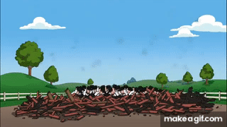

Soy una persona muy amistosa, en gran parte debido a que fui criado por vendedores de ropa, quienes me enseñaron desde pequeño la importancia de tratar bien a las personas y asi aprendí a atender con paciencia, respeto y amabilidad a quienes me rodean.
Soy una persona a la que le gusta diseñar páginas web y crear soluciones digitales que se adapten a las necesidades del cliente en el ámbito del software asi disfrutando el proceso de analizar lo que el cliente requiere y transformarlo en un diseño funcional.
- Omar Leonardo Dangond Rueda
Mis proyectos
Proyecto 1
En este proyecto se observa una hoja de vida, la cual ha sido diseñada para presentar de manera clara y organizada la información personal, académica y profesional.
Proyecto 2
En este proyecto realice una tarjeta de presentación personal que presenta datos personales de mi y de mi trabajo asi demostrando mi capacidad de realizacion de mi trabajo
Proyecto 3
No tengo más proyectos pero el gato me parece divertido por su manera relajada de la vida y a la vez me da tranquilidad al verlo caminar con alegria por la vida que lleva

Proyecto 4
Lo coloque porque de pequeño me gustaba construir cuando era pequeño asi aumentando mi creatividad en la realizacion de objetos interesantes